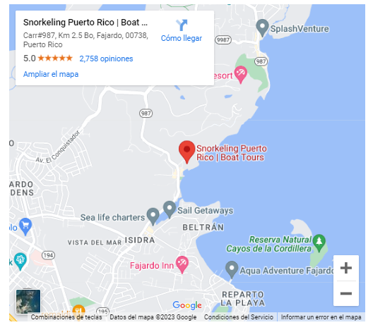

How to Find Us All right, amigos, before we start driving, a quick Spanish 101 lesson that will help you with the road signs along the way. In Spanish, Este = East, Oeste = West, Norte = North, and Sur = South. Great, now we are ready!  Take Route #26 to Route #66 East. Take Route #66 East to Route #3 East toward Fajardo. Proceed until you begin to approach the municipality of Fajardo. Look for a shopping center on the left (Eastern Plaza) with a Room To Go and a McDonalds on the corner, and turn left at the traffic light onto Rd. 194 Go straight on Rd. #194 for 1.2 miles. Immediately after passing the